精确线性代数主要包含两个互相关联的方面:一是一般PID和域 (特别地如有限域 )上的线性代数问题,二是作为特例,整数环
)上的线性代数问题,二是作为特例,整数环 和有理数域
和有理数域 上的线性代数问题.精确线性代数的很多问题同数值线性代数是相对应的,如线性方程组求解,矩阵的特征值与特征向量以及矩阵的各种标准型等.但由于精确计算与数值计算的本质不同,二者在算法设计思想等方面则有根本的不同.简单举例来说,如果对上的矩阵进行直接运算,为了保持计算的精确性,将不得不采用有理数的代数运算或引入Bezout等式进行消元.但两种方法随着计算规模的增长，都会出现矩阵元素的大小快速增加的现象，这将使得多数直接算法 (如通常的Gauss消元法)复杂度很高.尽管可以证明,在考虑了矩阵元素规模增长造成的计算复杂度增长之后,多数矩阵精确计算(包括求解线性方程组,计算行列式等)复杂度仍是多项式型的[1],但由于多项式指数相当大,对于实用计算造成很大的困难,难以直接应用.因此,在涉及整数与有理系数矩阵的计算中,一种典型的思路是借助整数的模运算,将主要的计算化归到有限域(
上的线性代数问题.精确线性代数的很多问题同数值线性代数是相对应的,如线性方程组求解,矩阵的特征值与特征向量以及矩阵的各种标准型等.但由于精确计算与数值计算的本质不同,二者在算法设计思想等方面则有根本的不同.简单举例来说,如果对上的矩阵进行直接运算,为了保持计算的精确性,将不得不采用有理数的代数运算或引入Bezout等式进行消元.但两种方法随着计算规模的增长，都会出现矩阵元素的大小快速增加的现象，这将使得多数直接算法 (如通常的Gauss消元法)复杂度很高.尽管可以证明,在考虑了矩阵元素规模增长造成的计算复杂度增长之后,多数矩阵精确计算(包括求解线性方程组,计算行列式等)复杂度仍是多项式型的[1],但由于多项式指数相当大,对于实用计算造成很大的困难,难以直接应用.因此,在涉及整数与有理系数矩阵的计算中,一种典型的思路是借助整数的模运算,将主要的计算化归到有限域( ,往往也不限于
,往往也不限于 为素数)上进行,再将结果恢复为整数或有理数的形式;另一种典型的思路是通过某种近似,将主要的计算视为数值型计算,通过数值运算得到主要结果后再恢复为精确结果.对于后者,由于数值型算法先于精确算法得到了比较充分的发展,故在精确线性代数中常常要借用数值线性代数的思想与方法,我们在本章中将多次遇到.
为素数)上进行,再将结果恢复为整数或有理数的形式;另一种典型的思路是通过某种近似,将主要的计算视为数值型计算,通过数值运算得到主要结果后再恢复为精确结果.对于后者,由于数值型算法先于精确算法得到了比较充分的发展,故在精确线性代数中常常要借用数值线性代数的思想与方法,我们在本章中将多次遇到.
本章集中介绍精确线性代数中有普遍应用的几个问题的算法:
- 快速矩阵乘法,这是很多矩阵算法的基础,在数值线性代数中也有广泛的应用.
- 线性方程组求解,包括系数矩阵非奇异的情形与一般系数矩阵下 (多相应于不定方程组)的Diophantine解.
- 行列式的计算,这在计算矩阵的各种标准形时有广泛的应用.
- 矩阵特征多项式与极小多项式的计算.
- 矩阵的标准形式,包括Hermite标准形,Smith标准形与Jordan标准形等.
由于精确线性代数的算法很多,且仍在迅速发展中,我们只能介绍一些基本的算法.更多的算法可以参考我们给出的文献以及它们的文献目录.
 快速矩阵乘法
快速矩阵乘法
在有关矩阵的计算中,矩阵乘法具有基础性的意义.对于 阶矩阵的乘法,常规算法具有
阶矩阵的乘法,常规算法具有 的复杂度.自1968年Strassen[2]发现一种基于分治策略的快速矩阵乘法算法以来,矩阵乘法复杂度的阶数已由3降到2.376[1].下面我们回顾两个经典算法,它们在实际中有着重要的应用.而更多算法虽然渐进复杂度更低,但由于算法过于复杂,且对于有限规模的问题所需运算更多,因而并不实用,可参考[3].[4]
的复杂度.自1968年Strassen[2]发现一种基于分治策略的快速矩阵乘法算法以来,矩阵乘法复杂度的阶数已由3降到2.376[1].下面我们回顾两个经典算法,它们在实际中有着重要的应用.而更多算法虽然渐进复杂度更低,但由于算法过于复杂,且对于有限规模的问题所需运算更多,因而并不实用,可参考[3].[4]
基于向量内积算法的Winograd加速算法
以下讨论主要来自文献[5].
 ,
, ,记
,记 ,
, ,则内积
,则内积 可由下式给出:
可由下式给出:

将这种算法用于 的矩阵元素运算时,由于减少重复计算
的矩阵元素运算时,由于减少重复计算 ,
, ,可使计算所需的乘法次数减半,但同时使所需的加法运算增加.Winograd算法也是
,可使计算所需的乘法次数减半,但同时使所需的加法运算增加.Winograd算法也是 的算法,仅适用于小规模的矩阵求积运算,且由于该算法破坏了向量内积的整体间运算,同时增加了内存开销,因而其算法改进价值并不很大.
的算法,仅适用于小规模的矩阵求积运算,且由于该算法破坏了向量内积的整体间运算,同时增加了内存开销,因而其算法改进价值并不很大.
Strassen算法
Strassen算法(1968)是一种分治策略的算法.它以分块矩阵运算为基础.
下面介绍改进型Strassen算法,它较原始算法[2]需要更少的矩阵加法运算[1].
 进行如下递归运算:
进行如下递归运算: (
( 为递归下界),做直接乘法.
为递归下界),做直接乘法.


以上算法的正确性直接代入即可验证.可以看出,每次递归需要7次乘法与15次加法,从而其算法复杂度是 .
.
下面考虑一个技术细节,即对于阶数不是 的矩阵添加零行零列的问题.很容易想到两种方案,一是在必要时才考虑添加,即在递归过程中,遇到矩阵阶数为奇数的情形则给它添加一个零行(或零列);二是统一添加,即在计算的开始首先考察矩阵的阶数,若它不满足的要求,即给它添加若干个零行零列,使之满足,而在正式计算过程中则不需再考虑矩阵阶数的问题.直观的理论分析可以知道,由于第一种方式一方面将添加零行零列的工作分成许多次完成,增加了很多冗余的判断,另一方面,它逐次添加零行零列的结果是使得矩阵在内存中的存储位置非常零碎,存储结构十分混乱,这两方面因素造成其计算效率大大下降.经实际测试,对于
的矩阵添加零行零列的问题.很容易想到两种方案,一是在必要时才考虑添加,即在递归过程中,遇到矩阵阶数为奇数的情形则给它添加一个零行(或零列);二是统一添加,即在计算的开始首先考察矩阵的阶数,若它不满足的要求,即给它添加若干个零行零列,使之满足,而在正式计算过程中则不需再考虑矩阵阶数的问题.直观的理论分析可以知道,由于第一种方式一方面将添加零行零列的工作分成许多次完成,增加了很多冗余的判断,另一方面,它逐次添加零行零列的结果是使得矩阵在内存中的存储位置非常零碎,存储结构十分混乱,这两方面因素造成其计算效率大大下降.经实际测试,对于 阶与
阶与 阶的系数在
阶的系数在 到
到 之间的整系数矩阵乘法,第二种方案的效率平均较第一种提高了30倍左右.
之间的整系数矩阵乘法,第二种方案的效率平均较第一种提高了30倍左右.
我们还对随机生成的浮点数矩阵进行了测试,并与经典算法给出的结果做对比,并未见数值稳定性有明显下降.
Strassen算法在之后有许多推广,最优渐进复杂度可以降到 .但在实际中,仅当
.但在实际中,仅当 极大时才有价值,故通常并不采用.可参考[4][3].
极大时才有价值,故通常并不采用.可参考[4][3].
线性方程组
线性方程组的重要性是显而易见的,它不但是许多实际问题的数学模型,而且构成许多算法的基础.在"数值线性代数"部分中我们已经介绍了工程计算中使用的数值算法,在这里我们将介绍线性方程组的精确求解,主要讨论整数系数与多项式系数线性方程组的有理解,一些方法可以推广到一般整区上.
基于中国剩余定理的模算法
求解一般线性方程组的一般方法在任何一本线性代数教材中都可以找到(例如,参见[6]).其典型做法是对线性方程组的系数矩阵与增广矩阵进行行初等变换,将其化为行相抵的行既约阶梯形阵(row-reduced echelon,RRE),即如下形式(最后的0可能是子方阵,也可能没有):
 即具有如下特点:
即具有如下特点:
- 非0行的最左非0元素非0,且此1所在行的其余元素均为0;
- 各非0行最左非0元素的位置,随行号增加而右移,若有零行均排在最后.
详言之,若非零矩阵 满足:存在一列整数
满足:存在一列整数 ,其中
,其中 (
( 即矩阵的秩),使得
即矩阵的秩),使得 ,
, ,
, ,且若
,且若 ,则第
,则第 行均为0.称
行均为0.称 为的既约阶梯(reduced echelon,RE)序列,
为的既约阶梯(reduced echelon,RE)序列, 称为RRE矩阵的对角元素.若
称为RRE矩阵的对角元素.若 与行相抵,则也称为的RRE,
与行相抵,则也称为的RRE, 为的行RE序列.对于已经化为这种形式的系数矩阵与增广矩阵,我们很容易判断线性方程组是否有解并求出其一般解.在下面我们考察的情形中，非0行往往以一个公共元素
为的行RE序列.对于已经化为这种形式的系数矩阵与增广矩阵,我们很容易判断线性方程组是否有解并求出其一般解.在下面我们考察的情形中，非0行往往以一个公共元素 开始,对于整系数线性方程组的求解,由此可以避免中间计算过程出现分数.
开始,对于整系数线性方程组的求解,由此可以避免中间计算过程出现分数.
在本节中,我们将介绍一种适用于整系数与多元多项式系数线性方程组求解的算法[7].在如下算法中,我们需要判断采用模同态的可用性,其判断标准由如下定义的矩阵的正则RE序列表征.为了叙述方便,我们首先引入[6]中的子阵的记号:设 ,
,
 阶矩阵
阶矩阵 中位于第
中位于第 行和第
行和第 列交叉处的元素按原序排成的方阵称为的一个
列交叉处的元素按原序排成的方阵称为的一个 阶子阵,记为
阶子阵,记为 记
记 为矩阵的前列构成的子矩阵.定义序列
为矩阵的前列构成的子矩阵.定义序列 ,其中
,其中 为最小的整数使得
为最小的整数使得 .由行变换不改变列向量之间的相关性质可知,即上文定义的行RE序列,而且是唯一的.对于非零矩阵,可以找到一列互异整数
.由行变换不改变列向量之间的相关性质可知,即上文定义的行RE序列,而且是唯一的.对于非零矩阵,可以找到一列互异整数 ,
, 满足
满足 若记
若记 为其余的整数,则
为其余的整数,则 构成
构成 的一个排列.记所有这样的序列构成集合
的一个排列.记所有这样的序列构成集合 ,则中,存在一个(按照字典序)最小的序列
,则中,存在一个(按照字典序)最小的序列 .这相当于说,对于
.这相当于说,对于 ,
, 为依次选出来的最小的整数使得这些行向量线性无关,而对于
为依次选出来的最小的整数使得这些行向量线性无关,而对于 ,
, 被按照原序排好.若为零矩阵,我们很自然地定义
被按照原序排好.若为零矩阵,我们很自然地定义 .在下面的算法中,我们将用
.在下面的算法中,我们将用 的字典序来判断实施的模同态是否改变了某些"本质的"内容,即我们认为
的字典序来判断实施的模同态是否改变了某些"本质的"内容,即我们认为 ,当且仅当
,当且仅当 ,或
,或 .
.
在定义了矩阵的正则RE序列之后,我们引入如下的正则RRE矩阵.对于阶矩阵,定义
 对于利用
对于利用 的定义可知,
的定义可知, 为RRE矩阵,且可以证明,与行相抵.特别地,对于
为RRE矩阵,且可以证明,与行相抵.特别地,对于 ,将其记为
,将其记为 ,并称为的正则RRE.很显然,这一标准形式是唯一确定的.对于,定义
,并称为的正则RRE.很显然,这一标准形式是唯一确定的.对于,定义 若为零矩阵,则定义
若为零矩阵,则定义 .我们看到的对角线元素都等于
.我们看到的对角线元素都等于 .特别地,对于
.特别地,对于 ,将
,将 简记为
简记为 或.
或.
该算法的整体思路,就是计算线性方程组增广矩阵的CRRE,并利用其得到线性方程组的一般解.其中,前者是算法最核心的部分.我们首先讨论后者的算法,即已知增广矩阵的CRRE,求得线性方程组的一般解的问题.为了讨论最一般的情形,我们设要求解的方程组为 ,其中为阶矩阵,为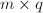阶矩阵,未知元排列成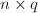的矩阵
,其中为阶矩阵,为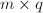阶矩阵,未知元排列成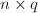的矩阵 ,并设与为元多项式系数的矩阵对于整系数矩阵只要将取为0.
,并设与为元多项式系数的矩阵对于整系数矩阵只要将取为0.
根据线性代数的知识,线性方程组的的一般解集合由一个特解与系数矩阵的零空间表征，即该方程组的任意解都可表达为该特解与零空间中向量的和.因此,我们要求线性方程组的一般解,就是要同时求出其特解和零空间的一组基.
首先考察一个RRE矩阵 的零空间.设为阶非零RRE矩阵,其RE序列为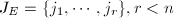,公共的对角元素为.记1到中除RE序列之外的元素为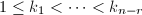.如下构造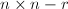矩阵
的零空间.设为阶非零RRE矩阵,其RE序列为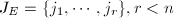,公共的对角元素为.记1到中除RE序列之外的元素为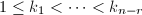.如下构造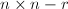矩阵 ,
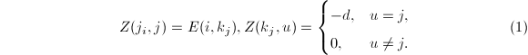容易证明且为列独立阵.当作为矩阵的RRE形时,也即存在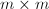阶可逆阵
,
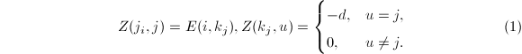容易证明且为列独立阵.当作为矩阵的RRE形时,也即存在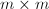阶可逆阵 使得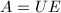,则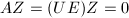,从而给出了的零空间的一组基.利用这一结论,可以对线性方程组的增广矩阵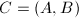做出如下结论:
使得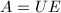,则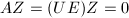,从而给出了的零空间的一组基.利用这一结论,可以对线性方程组的增广矩阵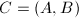做出如下结论:
的增广矩阵,其中为阶矩阵,为阶矩阵.并设 的秩为,为的RRE形,公共的对角元为.当线性方程组有解时,设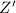为根据与
的秩为,为的RRE形,公共的对角元为.当线性方程组有解时,设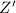为根据与 按如上方式构造出的矩阵,设为的前行与前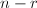列的子阵,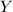为的前行与后
按如上方式构造出的矩阵,设为的前行与前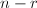列的子阵,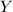为的前行与后 列的子阵,则
列的子阵,则 是的一般解,即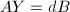且张成的零空间.
的列无关性容易验证.
□
是的一般解,即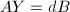且张成的零空间.
的列无关性容易验证.
□
然而,对于整系数线性方程组,如果直接对整系数矩阵进行行变换,并保持中间表达式为整系数,则很容易出现类似"高精度运算"部分中提到的中间表达式膨胀(intermediate expression swell),即经过多次乘法后,中间表达式的位数远远超过计算机的硬件处理上限而不得不采取高精度运算,而这将严重影响程序执行的效率.多项式系数的矩阵也有类似情形.为了避免整数与多项式系数矩阵在计算中出现的中间表达式膨胀问题,自20世纪60年代起已经发展了系统的模算法,其基本思想在引言中已经有所介绍,即通过如下两种同态映射(1)到 的模同态与(2)到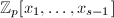的计值运算,这也等价于模的同态映射将整数环与多项式环上的问题化到有限环上,这样就限制了主要计算的规模.由于矩阵的初等变换归根到底只涉及矩阵元素的乘法与加减法1,因此这样的模映射保持如下的图交换:
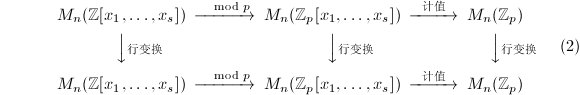\mod p>> M_n(\mathbb{Z}_p[x_1,\ldots,x_s])@>\text{计值}>>M_n(\mathbb{Z}_p) \\
@VV{\text{行变换}}V @VV{\text{行变换}}V @VV{\text{行变换}}V\\
M_n(\mathbb{Z}[x_1,\ldots,x_s])
@>\mod p>> M_n(\mathbb{Z}_p[x_1,\ldots,x_s])@>\text{计值}>>M_n(\mathbb{Z}_p)
\end{CD}
\end{equation*}
" class="latex-display" name="eqref-2" width="580" height="95">为了从以上计算的结果得到有理数解或分式解,可采用模同态的中国剩余定理与多项式插值定理(本质上也相当于中国剩余定理)来"恢复"应有结果.这种思路可以判断线性方程组是否有解并求得其一般解.整体来讲,我们的算法包含如下的三个层次,相应于(2)中的三个映射:
的模同态与(2)到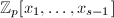的计值运算,这也等价于模的同态映射将整数环与多项式环上的问题化到有限环上,这样就限制了主要计算的规模.由于矩阵的初等变换归根到底只涉及矩阵元素的乘法与加减法1,因此这样的模映射保持如下的图交换:
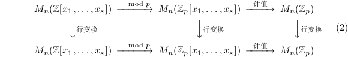\mod p>> M_n(\mathbb{Z}_p[x_1,\ldots,x_s])@>\text{计值}>>M_n(\mathbb{Z}_p) \\
@VV{\text{行变换}}V @VV{\text{行变换}}V @VV{\text{行变换}}V\\
M_n(\mathbb{Z}[x_1,\ldots,x_s])
@>\mod p>> M_n(\mathbb{Z}_p[x_1,\ldots,x_s])@>\text{计值}>>M_n(\mathbb{Z}_p)
\end{CD}
\end{equation*}
" class="latex-display" name="eqref-2" width="580" height="95">为了从以上计算的结果得到有理数解或分式解,可采用模同态的中国剩余定理与多项式插值定理(本质上也相当于中国剩余定理)来"恢复"应有结果.这种思路可以判断线性方程组是否有解并求得其一般解.整体来讲,我们的算法包含如下的三个层次,相应于(2)中的三个映射:
- (算法的最外层)利用模映射,将上的多元多项式系数的矩阵映射到上的多元多项式系数的矩阵,引用中层算法得到其标准雁阵形,再通过中国剩余定理得到整系数或有理系数多元多项式矩阵的RRE.据此得到线性方程组的通解;
- (算法的中层,应用于多元多项式系数的线性方程组)对于上的多元多项式系数的矩阵,通过计值映射将其化为上的矩阵,引用内层算法将其化为RRE,再通过多元多项式的插值算法得到上的多元多项式系数的RRE矩阵;
- (算法的内层)通过上的Gauss消去法,将上的矩阵化为RRE.
对这个整体思路可以打一个比方,为了减小"信息处理"的工作量,我们先对原问题中需要处理的上的多元多项式矩阵先做一个"压缩"映射,对这个"压缩包"进行应有的处理之后,再通过"解压缩"将其恢复为我们需要的处理之后的结果.这时,我们将面临一个重要问题,即怎样保证这样的压缩处理是"无损压缩",从而可以从压缩包中重新恢复我们需要的结果呢?也就是说,我们使用怎样的模映射,才能保证可以通过中国剩余定理与插值算法得到原矩阵的RRE呢?详细说来,可以提出如下的三个问题:
- 我们所谓"无损压缩",究竟保持什么"信息"稳定,从而可以据此恢复应有结果?
- 什么样的模映射构成我们所需的"无损压缩"?
- 我们需要多少这样的模映射才能得到真正的"无损压缩"?实际存在的这种模映射够不够用?
下面我们回答这些问题,并给出线性方程组的求解详细算法.
首先讨论模映射的交换性.引入如下记号:以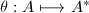表示模映射,以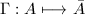表示计算REE形的行变换.若 与
与 可交换,则称模映射具有交换性.在这种情况下,我们对
可交换,则称模映射具有交换性.在这种情况下,我们对 进行行变换得到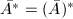,从而可以对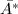应用中国剩余定理恢复原矩阵的REE形.下述定理指出了模映射的交换性的充分条件:
进行行变换得到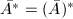,从而可以对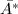应用中国剩余定理恢复原矩阵的REE形.下述定理指出了模映射的交换性的充分条件:
映射下不满足上述条件,但模映射对于交换.尽管如此,我们仍然得到了一个有效的判别一个模映射是否可交换的充分条件.
下面的论述表明,不可行的模映射是有限的.在模映射下,矩阵子阵的行列式只可能从非0映为0.根据矩阵秩以及的定义可知,必有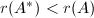或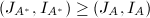.模映射可行当且仅当对于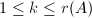,换句话说,模映射不可行当且仅当对某个,这样的模映射在整数环与多项式环上都是有限的,分别由整数的素因子个数与多项式的次数给出限制.因此,我们可以期望得到充分多的可行的模映射完成计算.当然,这里的"充分"由中国剩余定理与多项式插值公式来决定.
然而,以上给出的条件依赖于事先知道的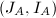,而这是不可能的.我们在计算中已知的只能是模映射后的矩阵的RE序列等.因此,我们还需要将以上条件换成其他等价条件,用模映射后的矩阵表示出来.确切地说,有以下两个定理,它们分别处理了对 和的检测.
和的检测.
 或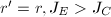J_C$" class="latex-inline" style="vertical-align: -4px" width="111" height="17">,则很容易通过代入得到不可能有的结果.
□
代入进行验证即可.通过如下的构造,可以减少该步骤验证的计算.设RRE形矩阵的RE序列为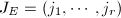,其余行记为
或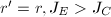J_C$" class="latex-inline" style="vertical-align: -4px" width="111" height="17">,则很容易通过代入得到不可能有的结果.
□
代入进行验证即可.通过如下的构造,可以减少该步骤验证的计算.设RRE形矩阵的RE序列为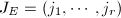,其余行记为 ,公共对角元为,定义的非对角部分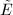如下:
>我们知道,中其余部分除对角元外均为0元素.又定义的两个子阵如下:
若定义如上,则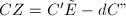,从而与代入验证等价的条件是
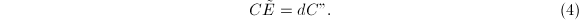实际中我们将采用此式进行代入验证.
为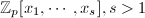1$" class="latex-inline" style="vertical-align: -5px" width="145" height="18">上的矩阵,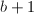为根据插值公式的次数要求给出的所需计值点数的上界(将在下面给出).设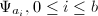为不同的计值映射,且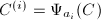的RE序列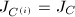,而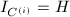.则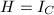.进一步,若是根据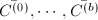运用插值方法构造出的RRE矩阵,则.
,公共对角元为,定义的非对角部分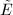如下:
>我们知道,中其余部分除对角元外均为0元素.又定义的两个子阵如下:
若定义如上,则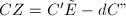,从而与代入验证等价的条件是
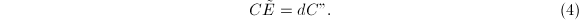实际中我们将采用此式进行代入验证.
为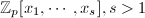1$" class="latex-inline" style="vertical-align: -5px" width="145" height="18">上的矩阵,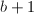为根据插值公式的次数要求给出的所需计值点数的上界(将在下面给出).设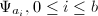为不同的计值映射,且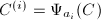的RE序列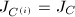,而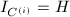.则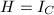.进一步,若是根据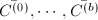运用插值方法构造出的RRE矩阵,则.
设为 阶增广矩阵,且与满足(4).则方程组的一般解可以如下构造:
阶增广矩阵,且与满足(4).则方程组的一般解可以如下构造:
下面我们给出插值方法所需的模同态的个数,也即给出矩阵中某些子行列式或多项式次数的上界.以下命题的证明都不困难,只要注意到细节问题即可,故略去.读者可以参考[7].
 .
为阶非零矩阵,.定义,,以及,令.定义0.\end{cases}$$" class="latex-display" width="580" height="61">则对任意,
.
为阶非零矩阵,.定义,,以及,令.定义0.\end{cases}$$" class="latex-display" width="580" height="61">则对任意, 构成中元素次数的上界.
构成中元素次数的上界.
这样,我们可将算法整理叙述如下.
,整数 .其中,为线性方程组的增广矩阵,为阶非零矩阵,为阶矩阵,.3
.其中,为线性方程组的增广矩阵,为阶非零矩阵,为阶矩阵,.3
输出:三元组.若线性方程组有解,则构成的特解,为的零空间的基.若线性方程组无解,则全部设为0.
- (初始化)置
 .
. - (模映射)若前述计算已经穷尽素数库,则算法失败4.否则,取出下一个素数,计算.若为零矩阵,转到第2步.
- (应用计值插值算法)运用CPRRE算法,计算以及的非对角部分.
- (进行模算法的可行性检测)置.若n$" class="latex-inline" style="vertical-align: -5px" width="78" height="18">,置,返回5.若r$" class="latex-inline" style="vertical-align: -1px" width="45" height="13">,转至第5步.若,转至第2步.若,转至第5步;若(j,i)$" class="latex-inline" style="vertical-align: -5px" width="101" height="18">,转至第2步.其余情形,转至第6步.
- (中国剩余定理算法初始化)置,置
 为阶零矩阵.
为阶零矩阵. - 由中国剩余定理的算法迭代步骤,由计算.采用类似的步骤,由计算阶矩阵的元素.置
 为.
为. - (相等检验)6若,,转至第8步.否则,置,,转至第2步.
- (代入检验)根据(3),由与构造
 与
与 .计算与7.若,转至第2步.
.计算与7.若,转至第2步. - (构造一般解)若,根据(5),由构造阶矩阵;若
 ,置为零矩阵.根据(6)构造阶矩阵.返回.
,置为零矩阵.根据(6)构造阶矩阵.返回.
下面的算法给出上矩阵RRE形的计算.注意到,其中大部分步骤与PLES算法是类似的.
 阶非零矩阵.
阶非零矩阵.
输出:,以及的非对角部分.
- (应用Gauss消去法)若为上的矩阵,由下面介绍的CRRE算法计算与.
- (算法初始化)置
- (计值同态)置.若,则算法失败返回8.否则,置.若,转至第3步.
- 递归调用CPRRE算法,计算关于的相应结果:以及的非对角部分.
- (计值同态的可行性检测)置.若r$" class="latex-inline" style="vertical-align: -1px" width="45" height="13">,转至第6步;若,转至第3步.若,转至第6步;若(J,I)$" class="latex-inline" style="vertical-align: -5px" width="113" height="18">,转至第3步.其余情况,转至第7步.
- (插值算法初始化)置.若,构造阶零矩阵,若,置.置
- 通过插值算法的一个迭代步骤,由构造.若,通过类似的计算用构造.若,置.更新若
 ,转至第11步.
,转至第11步. - (相等检验)若,,转至第9步.否则,置,转至第3步.
- (代入检验)若,转至第10步.根据(3),由和构造和.代入与中进行检验,若,转至第3步，否则置.
- (次数上界)根据6计算DRRE形矩阵元素次数的上界.
- (次数检验)若,转到第3步.否则,置,返回.
在算法的最内层,我们应用上的Gauss消去法给出矩阵的REE形.由于这是一个标准的算法,我们只要给出几个关键步骤的详细描述即可.
上的阶矩阵.
输出:表征的RRE形的,以及非对角元素.
- (初始化)置记.
- (向前消去步骤)设在向前消去的前
 步,我们已经得到了,并各有个元素添加到与中.在向前消去的第步,执行如下步骤:
步,我们已经得到了,并各有个元素添加到与中.在向前消去的第步,执行如下步骤:
- (寻找主元)在第行中,按自左向右逐列扫描的顺序,找到第一个非零元素.将添加到中,即令;置;交换第行至第行的排列顺序得到
 的一个"预备"形式:将第
的一个"预备"形式:将第 行排到第行,其余各行依原序排列,也即进行如下置换:
行排到第行,其余各行依原序排列,也即进行如下置换: 随后将中的元素进行类似的重排:将换成.
随后将中的元素进行类似的重排:将换成. - 令,
- (向前消去)对于k$" class="latex-inline" style="vertical-align: -1px" width="41" height="13">行中第列元素非零者,.
- (寻找主元)在第行中,按自左向右逐列扫描的顺序,找到第一个非零元素.将
- (向后消去)经过向前消去后,我们已经得到了的阶梯形式.设,则须执行
 个向后消去步骤以得到的RRE形式.在向后消去的第步,利用第行将前行的第列元素消去.可以证明,由此得到的RRE矩阵记为,据此可以得到其非对角元素.
个向后消去步骤以得到的RRE形式.在向后消去的第步,利用第行将前行的第列元素消去.可以证明,由此得到的RRE矩阵记为,据此可以得到其非对角元素.
至此,我们已完成了全部算法的叙述.McClellan在[7]中给出了详细的算法复杂性分析,我们不再给出具体结果.我们仅指出,这种算法的实际执行效率高度依赖于素数库的选择与插值映射的选择.其平均时间效率与在此之前的算法(即非模算法,如借助整数严格除法执行的Exact Division算法)相比,大致提高了倍.
-adic算法
求解非奇异整系数线性方程组 的模算法的另一种思路是对解进行进制(-adic,为素数)展开,然后"恢复"精确的有理数解.这一算法相当于多项式计算中介绍的Hensel提升方法,是Dixon (1982)[8]提出的.需要注意的是,与上节提到的对称表示不同,本节中中的元素都位于中.
的模算法的另一种思路是对解进行进制(-adic,为素数)展开,然后"恢复"精确的有理数解.这一算法相当于多项式计算中介绍的Hensel提升方法,是Dixon (1982)[8]提出的.需要注意的是,与上节提到的对称表示不同,本节中中的元素都位于中.
该算法包括三个主要步骤:
- 合理选定素数,要求.在上计算的逆,即,的存在性由保证.这一步可以利用上的Gauss消元法实现.
- 对于选定的充分大的,计算,使得.称为
 的进展式.
的进展式. - 由的进展式得到其有理解.
首先考察如何得到的进展式.执行如下步骤:
注意到由于，故上式最后一步中的除法是严格的,所得到的为整数.这样的循环步骤将在计算得到与 之后结束(的定义后面给出).这时,令
我们有
从而得到
之后结束(的定义后面给出).这时,令
我们有
从而得到
为了从得到,我们注意到一般为有理系数向量,可以表达为 ,其中
,其中 为整系数向量,.由此可得.有如下定理:
为整系数向量,.由此可得.有如下定理:
 满足其中为方程的一个根.设既约分数为的连分式展式序列,并记.若该序列中第一个满足
满足其中为方程的一个根.设既约分数为的连分式展式序列,并记.若该序列中第一个满足 ,则.
,则.
记,则从而对任意,由
得到, 为的一个最佳逼近.由[9]第二章定理1得到,等于的一个连分式展式,记为.由于
为的一个最佳逼近.由[9]第二章定理1得到,等于的一个连分式展式,记为.由于 与互素,
与互素, ,由的定义知.另一方面,由及得到.由于,,从而,即.从而.证毕.
□
,由的定义知.另一方面,由及得到.由于,,从而,即.从而.证毕.
□
在上述定理中取,即可给出 的一种算法.其中由定理中要求的不等式定义:,其中
的一种算法.其中由定理中要求的不等式定义:,其中 为
为 与的元素绝对值的上界,可由Hadamard不等式(参考[6]278页48题)给出:对任意实系数阶可逆阵
与的元素绝对值的上界,可由Hadamard不等式(参考[6]278页48题)给出:对任意实系数阶可逆阵 有其中
有其中 为列向量的2-范数.由Cramer法则知道,与中的元素均为增广矩阵的阶子式,从而可以选取
为列向量的2-范数.由Cramer法则知道,与中的元素均为增广矩阵的阶子式,从而可以选取 个列向量中最长的个向量的长度求得Hadamard界,并计算得到
个列向量中最长的个向量的长度求得Hadamard界,并计算得到 .随后通过连分式展开的步骤,执行如下过程:
.随后通过连分式展开的步骤,执行如下过程:
- ;
- 对执行直到.则
在实用中,对于连分式展式部分可以采用Lehmer加速算法,可以参考[10].经过详细的分析,Dixon指出这种算法的复杂度为,接近数值算法的渐近复杂度,而优于采用中国剩余定理的算法复杂度.
进入21世纪以来,利用Hensel提升求解整系数线性方程组的思想由Storjohnan等人进行了系统的发展[11][12][13][14].这种发展包括两方面:一是对原来的算法进行了改进,应用J.G.Dumas等人提出的有限域上运算的方法[15]以及改进的扩展Euclid算法[16]大大地提高了算法的效率;另一方面是将该算法与计算矩阵行列式结合起来[17],在一系列问题中得到应用,如求解不定方程组的Diophantine解[18]等.这些算法大多已经被应用于精确线性代数库LinBox中([19]及其索引文献).(这些算法发展待整理)
数值算法求精确解
如引言中所述,将精确线性代数计算过程压缩的另一种思路是将其化归为浮点数的运算.这是基于两方面的考虑:一是现代计算机往往具有超强的浮点数运算能力,通过将高精度的整数通过一定的计算手段化归为机器精度的浮点数运算,可以大大提高计算的效率;二是在精确线性代数快速发展之前,数值线性代数已经经历了长期而系统的发展,建立了基本线性代数子程序(Basic Linear Algebra Subroutines,BLAS)系统,著名的数值线性代数库LAPACK就是它的一个实现.相应的,数值线性代数对精确线性代数的启发有三个个层次:一是在进行或上的精确计算时,借助机器精度较长的浮点数来实现,而无需借助高精度整数环境;二是类似数值线性代数,也在精确线性代数领域引入BLAS技术,为更"高级"一些的算法提供基本的算法支持;三是在"高级"算法领域,如引言中所述,通过某种"压缩"步骤,将算法中大部分计算化归为浮点数的计算,在得到相应的数值结果之后,通过合理的手段恢复为整数或有理数.我们下面将要介绍的这一算法[20],就是这一方面的典型例子.相较Wan给出的原始证明,我们在下面给出的证明充分利用了连分式展开的性质,因而更简洁.
这一算法具有如下性质:它对于适当良态的(即数值稳定性好的,或者说条件数较小的)非奇异矩阵,能很快给出其精确解;而对于病态的矩阵,则很快判断并退出执行.它首先借助多次迭代,求得线性方程组的一个近似有理数解,当该有理数解构成方程组严格解的一个最佳逼近时9,用上节提到的连分式展式将精确解求出10.下面分别讨论这两个步骤.
对于良态矩阵解的迭代逼近,数值线性代数部分也已经有一些介绍,见"Gauss消元法"相关部分.然而,这种方法并没有将全部计算化归为单精度(或者说,机器精度)的计算,特别在将历次修正累加时,需要利用高精度的计算.因此,对于我们目前的要求来说还不够.我们的迭代计算过程如下.对于输入非奇异整系数矩阵与整数向量,将解初始化为 ,其中,
,其中, ,将余量置为.随后在每次迭代中,执行如下的步骤:在机器精度运算中找到近似解满足,选择合适的量
,将余量置为.随后在每次迭代中,执行如下的步骤:在机器精度运算中找到近似解满足,选择合适的量 ,对方程进行放大,即令,,将方程解修正为,,余量修正为.这样,在每步迭代步骤之后,出现在结果中的数,包括近似解的分子与分母以及(扩大后的)余量,都是不超过
,对方程进行放大,即令,,将方程解修正为,,余量修正为.这样,在每步迭代步骤之后,出现在结果中的数,包括近似解的分子与分母以及(扩大后的)余量,都是不超过 的整数.从而,迭代过程中我们不需要高精度运算.当近似解达到足够精度之后(判别标准如下),我们进行如下算法中叙述的恢复过程.
的整数.从而,迭代过程中我们不需要高精度运算.当近似解达到足够精度之后(判别标准如下),我们进行如下算法中叙述的恢复过程.
为非奇异整系数矩阵,为整系数向量.
输出:当为良态矩阵时,快速输出方程的有理解;否则,快速退出并输出"数值精度不足"的信息.
- 使用机器精度的浮点运算得到的分解(其他分解也可使用).
- 置解向量的公分母
- 置余向量.
- 置计数器
 .
. - 计算的Hadamard界(定义见"
 adic算法"一节).
adic算法"一节). - 重复执行以下步骤,直到2mB^2\left(2^{-i}\|b\|_\infty+\|A\|_\infty\right)$" class="latex-inline" style="vertical-align: -6px" width="231" height="21">:
- 置.
- 计算整系数向量,注意到
 .
. - 此时,精确解构成的一个最佳逼近,其分母有上界.可利用连分式展开的方法得到.
- 返回.
与,我们只需要证明若每次计算出的,则算法能够顺利执行完毕并得到正确结果.此时,由可知循环步骤只能执行有限次而最终退出.
记为步迭代之后解的分子.我们要估计绝对误差,由归纳法容易得到
在每步迭代中,根据定理的假设,.根据的定义,我们有 .从而,
.从而,
 据此,可以得到误差设为循环停止时计数值,则
据此,可以得到误差设为循环停止时计数值,则 根据Cramer法则(可参见[6]),正是的古典伴随矩阵,它的每个元素都是的
根据Cramer法则(可参见[6]),正是的古典伴随矩阵,它的每个元素都是的 阶子式,从而,这样就得到,也即.同样根据Cramer法则,我们知道为整系数向量.于是根据定理7,知道构成的一个最佳逼近,从而可以由的连分式展开得到.这就完成了我们的证明.
□
阶子式,从而,这样就得到,也即.同样根据Cramer法则,我们知道为整系数向量.于是根据定理7,知道构成的一个最佳逼近,从而可以由的连分式展开得到.这就完成了我们的证明.
□
的最大的不变因子(定义见下,也可见[6])或它的一个因子,随后可以更快地计算上述恢复过程.
 为的Smith标准型,则为整系数矩阵,而,
为的Smith标准型,则为整系数矩阵,而, 为整系数可逆方阵,从而为整系数方阵.
□
为整系数可逆方阵,从而为整系数方阵.
□
 已知,则算法6中由近似解恢复精确解成为平凡的,因为这时为整系数向量,从而在计算足够精度之后将近似解截断即可.即使仅能得到的一个非平凡因子,将其乘到近似解上,就只要计算的一个分母不超过的最佳逼近即可.下面给出随机性地计算最大不变因子的算法.
已知,则算法6中由近似解恢复精确解成为平凡的,因为这时为整系数向量,从而在计算足够精度之后将近似解截断即可.即使仅能得到的一个非平凡因子,将其乘到近似解上,就只要计算的一个分母不超过的最佳逼近即可.下面给出随机性地计算最大不变因子的算法.
 .
. 的概率给出的结果.
的概率给出的结果.
为了证明7算法的有效性,首先证明如下引理,它给出了以上随机化过程带来的结果.为了叙述方便,我们引入如下记号:对整数与素数,定义满足,,称为关于的阶.用表示概率.
 ;
;在算法7中,我们仍然需要求解线性方程组,这是不是陷入了一种循环呢?注意到,在算法中,我们只需在上求解两个线性方程组,而的恢复只需要少量运算,而不像之前算法中需要次恢复运算.这样,当很大时,我们可以利用这种方法进行加速.
的条件数有关.因此,我们可以只计算一次,而将之后的计算中取相同.这样带来的一种可能性是这样得到的不满足定理8中 (7)式的要求13.然而,我们可以通过检查余量的范数是否达到理论预测的值来发现这种情形.每当这种情形发生时,我们将减半,再次代入运算即可.
Wiedemann算法与线性代数中的黑箱方法
黑箱算法与随机性算法概述
在数值线性代数中,黑箱型(black box)算法已经广为人知.这一算法的基本特点是,在算法过程中,矩阵仅通过对向量的作用表现它的性质,而不考虑其内部结构.当矩阵是稀疏或有结构的,从而容易用较少的计算量得到其线性作用时,对于数值计算,迭代算法容易快速收敛到足够精度,从而有效减少计算量,同时不会因为对矩阵的显式操作而破坏矩阵的稀疏性和结构性质.自1986年Wiedemann[22]将数值线性代数中已经广为人知的黑箱型(Black box)算法14用于计算稀疏线性方程组的精确解以来,精确线性代数中的黑箱型算法已经得到了很大的发展.这一方面表现为越来越多的基于黑箱思想的算法的出现,另一方面表现为预处理等适用于数值型算法的随机化思想在精确计算中得到一席之地.在本节中,我们将着重介绍求解有限域上(事实上也不限于有限域)稀疏线性方程组15的Wiedemann算法([22],也可参考[1])以及求解 上齐次线性方程,即寻找向量之间线性相关系数的分块Lanczos算法[23].
上齐次线性方程,即寻找向量之间线性相关系数的分块Lanczos算法[23].
在介绍算法之前,先引入随机性算法的一些术语.我们知道,在进行精确计算时,由于问题的复杂性,有时会引入与传统计算不同的做法,即随机性算法.随机性算法往往通过引入完全不同的算法思想,达到经典意义上的"决定性"算法不能达到的速度.在数论算法与多项式算法中有很多问题需要考虑随机性算法.我们通常所说的"随机性"往往包含两层意思,一是算法总能快速地给出结果但不能保证结果的正确性.这种类型算法的典型例子是素性判定中的Solovay-Strassen算法,Rabin-Miller算法及APRCL方法等,可见"素数判定"一章中"概率性的检测方法"一节.或者程序快速返回,但可能带回一个警告信息而没有得到正确结果.我们在前面介绍的线性方程组精确求解的数值型算法正是这种情况.这种算法的执行过程中,往往包含随机化的步骤,如产生随机数,随机矩阵或对已知向量(矩阵)进行随机的线性变换等.特别地,在线性代数领域,这种随机化往往通过随机性的预处理器(pre-conditioner)[24]来实现.提出这种这种算法必须同时给出出错的概率的上界,从而提供这种算法的可靠性,这往往通过有关多项式零点个数的Schwartz-Zippel定理[25]进行估计.这种类型的算法往往称为Monte Carlo型算法.第二种情形是算法总能给出正确的结果,但不能保证每次都能快速执行,而只能在平均意义下,或在一些好的情形能快速给出正确结果,这称为Las Vegas型算法.实际上,我们遇到的很多算法都或多或少带有这种性质,即能够在一些好多情形特别快速地给出正确结果,例如以上给出的基于中国剩余定理的模算法.很容易看到,两种类型的随机性算法的区别不是绝对的,对于同一种算法甚至可以转换为Las Vegas型的或Monte Carlo型的.例如,如果很容易判断计算结果的正确性,(例如求解线性方程组的情形,求解过程一般需要的算法复杂度,而判断解的正确性却只要 次计算.)这时,我们只要反复执行算法,直到我们得到一个正确结果.这时我们可以说算法被化归为Las Vegas型的.对于一个Las Vegas算法,如果我们发现程序执行了过长的时间,例如远远长于平均执行时间时,我们就令算法中止退出,同时返回一个警告.我们可以说,这时算法就是一个Monte Carlo型的算法16.我们下面介绍的几个算法都带有随机性质.
次计算.)这时,我们只要反复执行算法,直到我们得到一个正确结果.这时我们可以说算法被化归为Las Vegas型的.对于一个Las Vegas算法,如果我们发现程序执行了过长的时间,例如远远长于平均执行时间时,我们就令算法中止退出,同时返回一个警告.我们可以说,这时算法就是一个Monte Carlo型的算法16.我们下面介绍的几个算法都带有随机性质.
在本小节的最后,我们介绍上面提到的Schwartz-Zippel定理[25].
 在中的次数,为在中的系数多项式.归纳地说,令
在中的次数,为在中的系数多项式.归纳地说,令 为中
为中 的次数,为中的系数,
的次数,为中的系数, .对
.对这一定理给出了多元多项式在其定义集合上零点个数的上界估计.在我们采取的随机化步骤中,往往需要在某个集合中随机取值,构造向量或矩阵,前者如线性递推列特征多项式的Berlekamp-Massey算法,而后者则是随机预处理器的核心步骤.在此过程中,我们常常希望避免某种奇异情形出现,而这种奇异情形往往表现为随机化算法中不小心取到了某个多元多项式的零点.根据Schwartz-Zippel定理,我们可以将随机取值的集合取得充分大,就可使算法由此失败的概率减低.
 的情形由代数基本定理可得.
的情形由代数基本定理可得.
设以上命题对成立,即其零点集有.若 ,则,都可能是的零点.若,则至多有个使得.从而在中至多有
个零点.
□
,则,都可能是的零点.若,则至多有个使得.从而在中至多有
个零点.
□
Schwartz-Zippel定理有如下推论,其证明很直接,但其结论对于概率性算法的分析有重要意义.
为了显示以上定理的作用,我们在随机预处理器中选取一个简单例子来看一看.
所谓预处理步骤,就是我们希望通过一个确定的或随机性的变换,将给定矩阵映射为,且满足某种好的性质.根据要求结果满足的性质不同,预处理器分为许多种[24],例如使主子式非奇异,或保证前列线性无关等.
我们知道,在经典的Gauss消元法中,对于一般矩阵求解必须附加选取主元的过程.该过程的目的就是为了保证主子式的可逆性,从而能够顺利进行以后的消元步骤.理论上,我们还可不限于对矩阵每个元素的操作,考虑如下的块消元过程:
 这样的算法至少有如下的几点好处:首先它借助分块矩阵计算将消元化为了一个递归的过程,这有利于算法复杂度的降低,再者经过化归后,该算法变得容易并行化.然而,这样的算法应用于一般矩阵时将遭遇重大的困难:算法步骤中要求必须可逆,而这并非普遍得到满足的.
这样的算法至少有如下的几点好处:首先它借助分块矩阵计算将消元化为了一个递归的过程,这有利于算法复杂度的降低,再者经过化归后,该算法变得容易并行化.然而,这样的算法应用于一般矩阵时将遭遇重大的困难:算法步骤中要求必须可逆,而这并非普遍得到满足的.
如果我们能够通过如下的线性变换 对
对 进行预处理,其中和
进行预处理,其中和 为预先选取的矩阵,使得满足块消元过程中要求的性质,则该算法可以进行,从而充分利用这一算法的优点.实际中,我们常常根据要求,在一定范围内进行随机选取预处理器,使之满足我们所需要的性质.
为预先选取的矩阵,使得满足块消元过程中要求的性质,则该算法可以进行,从而充分利用这一算法的优点.实际中,我们常常根据要求,在一定范围内进行随机选取预处理器,使之满足我们所需要的性质.
 ,
, 为
为 中随机选取.则
的每一分块均以概率1非奇异.
中随机选取.则
的每一分块均以概率1非奇异.
以上的随机四分变换是一类更普遍的随机蝶形变换(random butterfly transformation)的特例.这类变换的思想源起于一类复杂网络问题,它提供了一个很方便的分块矩阵预处理器,可以参考[26].从以上例子中我们可以归纳出预处理器的构造思路:
- 预处理过程即对矩阵进行如下的线性变换,,.
- 其中在(或
 )上随机选取.
)上随机选取. - 由于要证明的性质对应于上非零多项式,因此变换后的矩阵在一定概率下满足我们要求的性质.
在构造,的过程中,有一些原则是要遵守的:
- ,的选取要尽量简单.
- ,首先具有很好的性质,如求逆操作易于进行等.
- 若我们需要进行数值计算,则,应具有好的条件数,能够保证数值计算的精度.
线性递推列
在本节,我们首先介绍线性递推序列(linear recurrent sequences)及其极小多项式的概念以及相关算法.
 为线性递推列,若存在
为线性递推列,若存在 及,使得对于任意的都成立.
及,使得对于任意的都成立.根据以上定义,将和均取为,则我们熟悉的Fibonacci序列是线性递推列,构成它的一个特征多项式.根据我们的经验,对于一个线性递推列,在已知其特征多项式及最初的几个取值时,我们可以通过递推的方法快速计算其后记序列.下面我们举一些线性代数中涉及的线性递推列的例子,它们在我们下面的算法中将扮演重要角色.
.
- 取,为任意方阵.则为线性递推列,的最小多项式与特征多项式都是
 的特征多项式.
的特征多项式. - 设,,为任意向量.则注意到的任意特征多项式也将化为零,故也为线性递推列.由的元素生成的中的线性子空间称为与的Krylov子空间,这一定义与我们在数值线性代数中"迭代法"一章中引入的定义是一致的.
- 设,,
 为中的任意向量.则的任意特征多项式同样将化为零,故也为线性递推列.
◇
为中的任意向量.则的任意特征多项式同样将化为零,故也为线性递推列.
◇
我们看到,在引入线性递推列的特征多项式概念后,二者的结构产生了一定的关系.我们还可通过引入多项式对序列的作用,将无穷序列与多项式更紧密地联系起来,同时引出一些重要的概念.
固定,容易验证的特征多项式的集合与0一起,构成了中的理想,我们称之为的零化子理想,记为.由于为主理想整环,存在的生成元.按照定义,的倍数全体构成了的特征多项式集合,是其中次数最低的首一多项式,我们称之为的最小多项式.的次数称为的递推阶数.结合2中的几个例子,我们可以对线性代数中的特征多项式,最小多项式等概念有更深刻的理解.
本节的主要目的是给出线性递推序列的最小多项式的构造性算法.以下定理给出了极小多项式的一个判别法则.
 为线性递推序列,X$" class="latex-inline" style="vertical-align: -7px">,,,.
为线性递推序列,X$" class="latex-inline" style="vertical-align: -7px">,,,.
- 以下命题等价:
- 为的特征多项式;
- ,为低于阶的多项式;
- ,其中,且.
- 若为的极小多项式,则且.
- 直接代入按照形式幂级数的乘法规则验证即可.
- ,故.若\deg r$" class="latex-inline" style="vertical-align: -4px" width="66" height="16">,则,且为的特征多项式,与极小矛盾.设,则为
 次多项式,,且为次多项式.于是为的特征多项式,.
□
次多项式,,且为次多项式.于是为的特征多项式,.
□
在域上,取线性空间即基域,若给定一个线性递推列,且我们能够预先知道其最小多项式的次数上界.例如在前面的例2的3中,的最高次数不会超过矩阵的阶数.在这种情况下,可以通过求解如下的Padé逼近问题得到解答:
我们看到,正是如上问题的一组解.由Padé逼近问题解的唯一性,即得如下算法.
 个元素.
个元素.
经过分析,这一算法能在的域运算步骤内给出的最小多项式.
线性方程组的Wiedemann算法
下面我们考虑将线性方程组的解与线性递推列的最小多项式联系起来.我们首先考虑线性方程组,系数矩阵非奇异,则该线性方程组有唯一解.设为线性递推序列的最小多项式,则 ,从而我们得到即为方程组的解.据此分析,我们得到如下算法:
,从而我们得到即为方程组的解.据此分析,我们得到如下算法:
 的最小多项式.
的最小多项式.以上给出了Wiedemann算法的整体思路,但其中还有一个重要问题没有解决,这就是算法第一步中要求的维向量组成的线性递推列的最小多项式的计算.但由例2中3,我们知道与的特征多项式有很重要的联系.详言之,我们知道的每个特征多项式都将零化,即,从而;另一方面,若,则,否则总可取使得 .这样,我们有如下的随机性算法,若该算法顺利执行完毕,则能给出正确的结果.
.这样,我们有如下的随机性算法,若该算法顺利执行完毕,则能给出正确的结果.
 的最小多项式.
的最小多项式.
 至少提供了
至少提供了 的一个非平凡因子.因此我们也可以尝试如下策略来对以上算法进行加速,将第3步的校验步骤扩展为以下两种方式中的任意一种:
的一个非平凡因子.因此我们也可以尝试如下策略来对以上算法进行加速,将第3步的校验步骤扩展为以下两种方式中的任意一种:
- ,若,则令,返回步骤1.
- ,若,则返回步骤1.[22]
这样做法的正确性很容易证明.
在给出一个随机性算法后,我们急需解决的一个问题是算法的有效性.与确定性算法不同的是,仅仅知道一个随机性算法的正确性是远远不够的,18我们还需要知道,这一算法到底以多大概率命中正确结果,从而能够很快返回.为此,我们还需要对作为上模的结构有更清楚的认识.
设为次多项式,记为由生成的多项式理想.定义,则为上的循环模,且,其中,为根据前个元素递推得到的序列元素.这时构成了的一组基.我们看到,多项式在上的作用给出了到的满同态,从而决定了如下的模同构:这样的结构给出了如下的引理,它是我们分析算法有效性的基础.
![$\phi:F[X]/\langle f\rangle\rightarrow M_f$](./latex/latex2png-ExactLinearAlgebra_157740178_-5.gif) .我们还可定义线性映射,并由为的极小多项式得到为满射.因此可以构造线性满映射用交换图表示如下:
.我们还可定义线性映射,并由为的极小多项式得到为满射.因此可以构造线性满映射用交换图表示如下:
这时,我们有 □
 中的任意向量,由线性得到
其中,且次数低于..令为不定元,,则的总次数不超过.由于,但满,故
中的任意向量,由线性得到
其中,且次数低于..令为不定元,,则的总次数不超过.由于,但满,故 .从而随机选择时,.
□
.从而随机选择时,.
□
根据该定理,可以给出Wiedemann算法9的平均复杂度估计,证明可参考[1].
对于元素很少的域 ,上面的随机性算法不适合于直接应用.这时,我们可以采取两种方式:一是对进行适当的域扩张,从中进行元素的随机选择;此时算法复杂度大致要乘上一个的因子,其中是进行上的次多项式乘法的运算量.第二种方式是利用注记7中类似的方法,即使某次计算失败了,仍然从中提取出我们想要的信息.
,上面的随机性算法不适合于直接应用.这时,我们可以采取两种方式:一是对进行适当的域扩张,从中进行元素的随机选择;此时算法复杂度大致要乘上一个的因子,其中是进行上的次多项式乘法的运算量.第二种方式是利用注记7中类似的方法,即使某次计算失败了,仍然从中提取出我们想要的信息.
1. 注意到,以下的算法步骤中并不显式包含整数的除法,这是我们构造该交换图的基础.然而,必须注意,这里出现的三个"行变换"是执行完全相同的操作,在这个意义下,该交换图总是成立的.而后面将会讨论的模同态的交换性是在如下意义下:对于一个已知的矩阵,要通过行变换求得其REE形,这一变换对于模映射前后的两个矩阵可能是不同的,例如矩阵在模映射下得到零矩阵,二者的RE序列显然不同,从而化为REE形所需行变换也是不同的.如果模映射前后的两个矩阵需要执行的行变换完全相同,则模映射自然是交换的,这构成"交换"的充分条件.对此,后面会给出更为详细的分析.
2. 这种估计往往由Hadamard不等式提供,见"p进展开方法"一节.
3. 在该算法中,我们还需要一个相当规模的素数库.通常取该库中的素数满足,其中为计算机硬件计算的字长.这样的素数库可以预先存储在程序库中,也可以动态生成.该库的生成并非本算法讨论的内容.
4. 若素数库采取动态生成的方式,则不应有此问题.
5. 注意到此时,线性方程组右端向量组包含列独立与系数矩阵列空间的向量,从而方程组无解.
6. 这一检验成立是中国剩余定理算法结束的必要条件(不是充分条件).此处引入该检验,是为了让随后的"代入检验"成功的可能性更大,从而减少代入检验的运算量.
7. 此处要运用矩阵乘法.对于一般矩阵的乘法快速算法可以参考"快速矩阵乘法"一节.对于多元多项式系数的矩阵乘法(在CPRRE算法中要用到),也可采用计值插值的方法进行.
8. 注意!这里包含一个与PLES算法很重要的不同之处.由于PLES算法中被模掉的素数可以在全体整数中选取,因此其算法主体总能成功(只要它调用的CPRRE算法成功);然而,由于CPRRE算法的计值点只能在中选取,而这是有限的,因此可能不成功.鉴于此,通常我们选取模同态时,要求模掉的素数充分地大:只要满足的条件,从而上的运算可以高效地执行.
9. 这种说法看上去很自然,但并不准确.严格来讲,应该是精确解构成近似解的一个最佳逼近.见下所述.
10. 据[20]的说法,这种思想来源于分母有限大的有理数是离散的.
11. 上述选择是基于如下考虑:选择2的幂次使得以下的计算变为简单的移位的过程,从而更为搞笑;若为充分良态的,则余量可能已经非常之小,需要加一个限制以保证以下的乘法不会溢出,这一限制被选择为同样是为了使计算结果在机器精度之内.
12. 注意到,这样的情形仅发生在为病态的时候.
13. 事实上,即使按照原算法中建议的去做,也可能由于浮点数运算的舍入误差出现这种情况(尽管已经尽量做了避免).
14. 可参考数值线性代数部分"迭代法"一章,也可参考其中所列出的参考文献.
15. 这里的"稀疏"条件只是为了保证矩阵对向量的线性作用能以较少的计算量得到估计.对于某些有结构的矩阵,如Vandermonde阵,由于也满足这一要求,因而同样适合应用黑箱型算法.
16. 它至少还返回了一个警告.从这种意义上说,它还优于通常意义下的Monte Carlo型算法.
17. 直观地讲,模就是"环上的线性空间".关于其严格定义以及一些一般性质,可参考[6].
18. 如果我们这里的正确性仅仅指,"如果按照正常步骤计算并正常退出,则算法返回正确结果"的话.
19. Lanczos算法最先是由Lanczos提出用于数值求解稀疏线性方程组的,参见"数值线性代数"部分.准确地说,Wiedemann算法正是类似Lanczos算法的黑箱技术在精确线性代数领域的对应.
参考文献
[1]Modern Computer Algebra, Cambridge University Press, 2002.
[2]Gaussian Elimination is not Optimal, Numer. Math. 13 (1969), 354-356.
[3]Matrix multiplication via arithmetic progressions, proceedings of the nineteenth annual acm symposium on theory of computing, 1987.
[4]How Can We Speed Up Matrix Multiplication?, SIAM Review 26 (1984), no.3.
[5]A New Algorithm for Inner Product, IEEE Trans. Comp. 17 (1968), 693-694.
[6]高等代数学, 清华大学出版社, 北京, 2004.
[7]The exact solution of systems of linear equations with polynomial coefficients, Journal of the Association for Computing Machinery 20 (1973), no.4, 563-588.
[8]Exact solution of linear equations using p-adic expansions, Numer. Math. 40 (1982), 137-141.
[9]Continued fractions, World Scientific, 1992.
[10]The art of computer programming, volume 2 (3rd ed.): seminumerical algorithms, Addison-Wesley Longman Publishing Co., Inc., Boston, MA, USA, 1997.
[11]An implementation of certified linear system solving for integer matrices, 2004, Poster at ISSAC.
[12]A fast implementation of system solving for integer matrices, 2004, Poster at ECCAD'2004.
[13]High-order lifting and integrality certification, Journal of symbolic computation 36 (2003), 613-648.
[14]The shifted number system for fast linear algebra on integer matrices, Journal of complexity 21 (2005), 609-650.
[15]FFPACK: finite field linear algebra package, ISSAC'04, 2004.
[16]Acceleration of euclidean algorithm and rational number reconstruction, SIAM J. Comput. 32 (2003), no.2, 548-556.
[17]Complexity of parallel matrix computations, Theor. Comp. Sc. 54 (1987), 65-85.
[18]Effient parallel solution of sparse systems of linear diophantine equations, PASCO'97, 1997, 1-10.
[19]Some recent progress in exact linear algebra and related questions, ISSAC'07, 2007.
[20]An algorithm to solve linear systems exactly using numerical methods, 2005, preprint submitted to elsevier science.
[21]Acceleration of euclidean algorithms and extensions, ISSAC'02, 2002.
[22]Solving sparse linear equations over finite fields, IEEE transactions on infomation theory 32 (1986), no.1, 54-62.
[23]A block lanczos algorithm for finding dependencis over gf(2), Advances in cryptology, EUROCRYPT'95, LNCS 921, Springer-Verlag, 1995, 106-121.
[24]Efficient matrix preconditioners for black box linear algebra, linear algebra and its applications 343-344 (2000), 119-146.
[25]Fast probabilistic algorithms for verification of polynomial identities, Journal of association for computing machinery 27 (1980), no.4, 701-717.
[26]A randomizing butterfly transformation useful in block matrix computations, (1995).